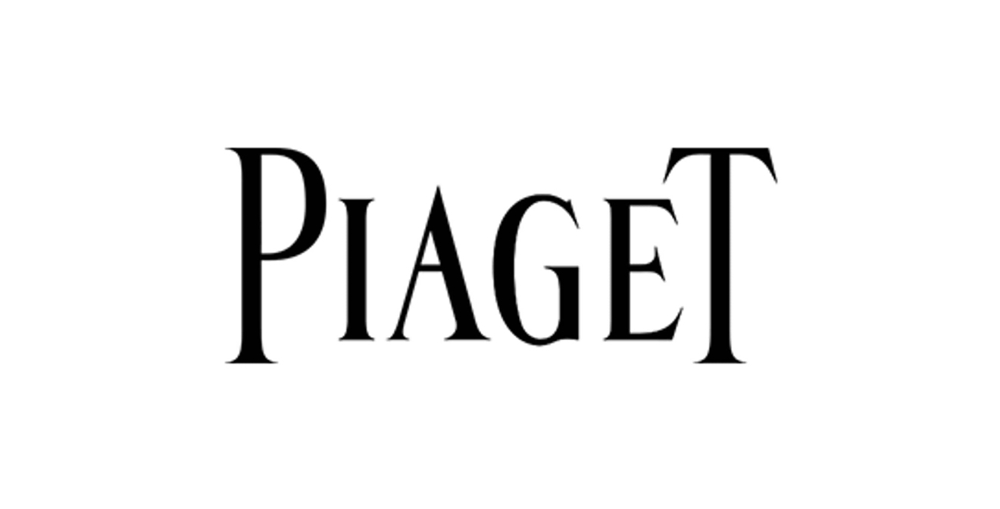
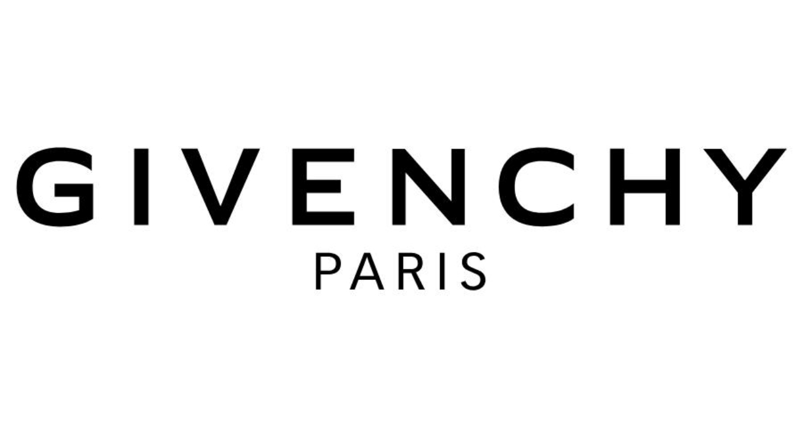

Project Overview
During my internship at Publicis Groupe, I supported social media communication for luxury brands including Piaget and Givenchy Makeup. My work focused on content management, competitor research, and performance analysis.
Brand Communication

Piaget
Supported social media operations and monitored luxury jewelry and watch competitors across different digital platforms.

Givenchy Makeup
Assisted with social media content review and competitor research in the beauty industry.
My Responsibilities
Social Media Operations
Supported content review and daily social media activities across Xiaohongshu, Douyin, Weibo, and WeChat.
Competitor Research
Tracked competitor campaigns, social media content, and audience engagement to understand digital communication strategies.
Performance Analysis
Prepared monthly reports covering social media performance, engagement, and follower growth.
Key Takeaways
This experience helped me understand how luxury brands maintain their visual identity while adapting content to different social media platforms. It also strengthened my skills in content analysis, research, and digital communication.